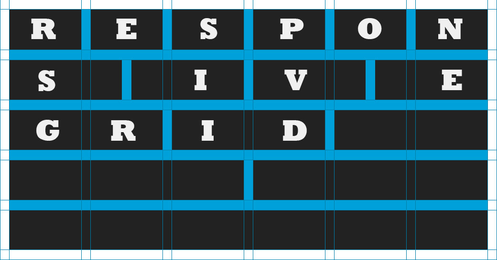

Responsive Framework
This is meant to be an easy to use framework for me to use on my projects. What's wrong with other frameworks such as bootstrap and foundation? Nothing. In fact, I think they're awesome but honestly we don't need all the stuff that they provide. You say: "Just remove it." Good luck with that!
